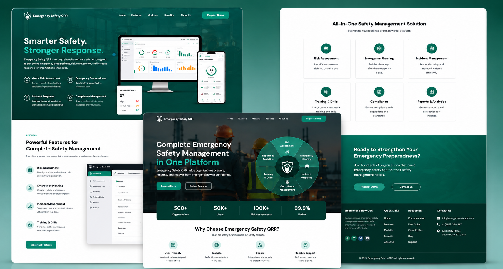

Manthan Stones is a modern e-commerce platform specializing in premium natural stones, tiles, and architectural materials for residential and commercial projects. Infotive Solutions designed and developed a visually compelling, high-performance website that showcases an extensive product catalog while delivering a seamless online shopping experience for customers.
Project:
Manthan Stone
Timeline:
Ongoing
Scope:
Custom E-Commerce Website Design & Development, Responsive UI/UX Design, Product Catalog Management, Product Detail Pages, Custom CMS Implementation, Quote Request & Inquiry System, Performance & SEO Optimization, Cross-Browser Compatibility, Mobile-First Development, Secure Contact Forms, Ongoing Maintenance & Support.

Manthan Stones needed a modern e-commerce platform that could effectively showcase its premium collection of natural stones while delivering a seamless browsing experience for architects, designers, contractors, and homeowners. The challenge was to create a visually appealing, high-performance website that simplified product discovery, encouraged customer inquiries, and supported future business expansion.
By combining strategic UI/UX design, scalable e-commerce development, and performance-driven optimization, Infotive Solutions delivered a future-ready digital platform that strengthens Manthan Stones' online presence, enhances customer engagement, and supports long-term business growth.
At Infotive Solutions, we partnered with Manthan Stones to create a modern, high-performance e-commerce platform that showcases premium natural stone collections while delivering a seamless shopping experience. Our development approach focused on combining elegant design, intuitive navigation, and scalable technology to help customers discover products effortlessly and generate qualified business inquiries.
By combining modern e-commerce development, strategic UI/UX design, and performance-driven optimization, Infotive Solutions delivered a future-ready digital platform that helps Manthan Stones showcase its premium product range, attract qualified buyers, and support long-term business growth through a seamless online experience.
The Manthan Stones project highlights Infotive Solutions' expertise in developing high-performance e-commerce solutions that combine elegant design, scalable technology, and exceptional user experiences. By focusing on performance, usability, and business growth, we delivered a future-ready digital platform that helps Manthan Stones showcase its premium products, attract qualified customers, and strengthen its position in the competitive natural stone industry.